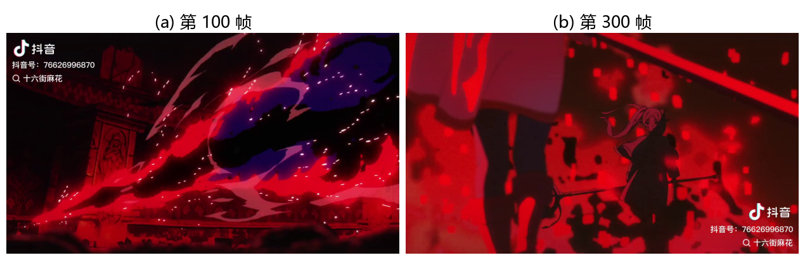
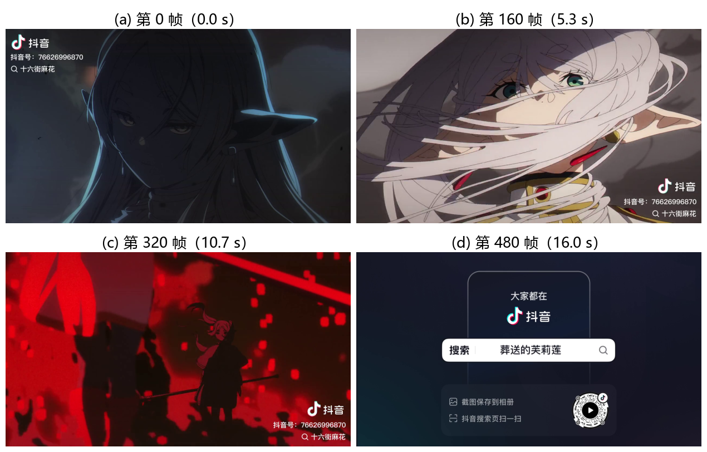
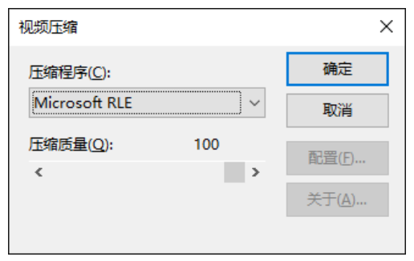
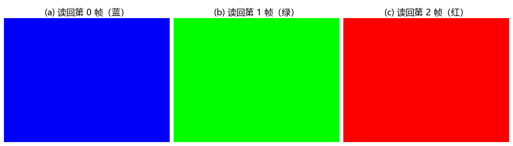
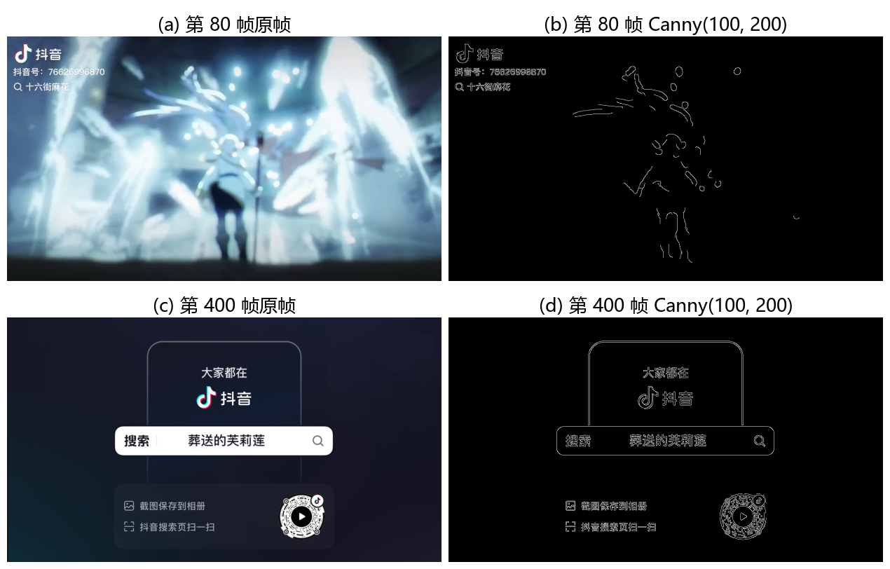
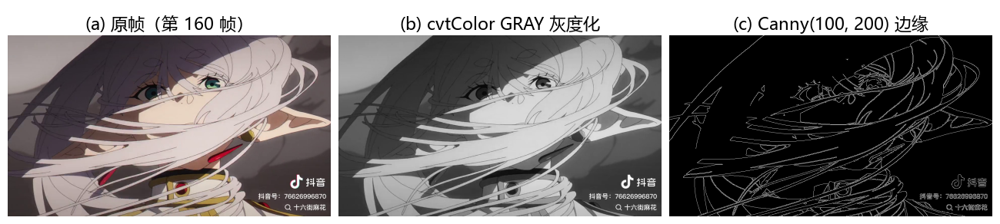

第 18 章 视频处理#
本章解决：视频怎么进 OpenCV——视频由一系列静止图像（帧）按固定时间间隔排开，每秒出现的帧数叫帧速率（FPS）；抽出帧就能用图像处理的方法逐帧处理，处理完也就等于处理了视频。前半章用
cv2.VideoCapture把摄像头或视频文件里的帧一帧帧读出来，并用CAP_PROP_*属性查、改视频状态；后半章用cv2.VideoWriter把帧序列按指定编码器（fourcc）、帧速率、帧尺寸写成视频文件。两个类配合，就能完成捕获、播放、保存、逐帧处理的完整闭环。
运行环境约定
本章代码引用素材根目录下的视频文件 video1.mp4（1280×720、30 fps、484 帧）。运行时工作目录需为 数字图像处理-python 根目录，video1.mp4 就在那里。原书用 viptrain.avi、vtest.avi 演示播放与逐帧处理，本章统一换成素材目录里的 video1.mp4，代码逻辑一字未改。涉及摄像头的示例（cv2.VideoCapture(0)，例 18.1、例 18.3）必须接有真实摄像头才能运行；没有摄像头的环境会读到 ret=False，无法出画面——因此例 18.1 的运行效果（图 18.1）在本笔记中用 video1.mp4 的抽帧模拟。
18.0 本章导图#
视频信号是非常重要的视觉信息来源。视频由一系列图像构成，这一系列图像被称为帧（frame），帧以固定的时间间隔从视频中获取。获取（播放）帧的速度称为帧速率（frame rate），单位通常用"帧/秒"表示，代表 1 秒内出现的帧数，对应的英文是 FPS（Frames Per Second）。从视频中提取出独立的帧，就可以用图像处理的方法对其进行处理，达到处理视频的目的。
OpenCV 提供了 cv2.VideoCapture 类和 cv2.VideoWriter 类来支持各种类型的视频文件。在不同的操作系统中，它们支持的文件类型可能有所不同，但在各种操作系统中均支持 AVI 格式的视频文件。
18.1 VideoCapture 类#
OpenCV 提供了 cv2.VideoCapture 类来处理视频。它处理视频的方式简单、快捷，既能处理视频文件，又能处理摄像头信息。
18.1.1 类函数介绍#
cv2.VideoCapture 类的常用函数包括初始化、打开、帧捕获、释放、属性设置等。
1. 初始化#
构造函数 cv2.VideoCapture() 用于打开摄像头并完成初始化，语法格式：
- 摄像头 ID 号是摄像设备的 ID 编号，不是文件名。默认值为 -1，表示随机选取一个摄像头；有多个摄像头时，用数字 0 表示第 1 个摄像头，数字 1 表示第 2 个摄像头，以此类推。只有一个摄像头时，用 0 或 -1 都可以。
- 在某些平台上，参数值为 -1 时 OpenCV 会弹出一个窗口，让用户手动选择希望使用的摄像头。
- 返回值"捕获对象"是
cv2.VideoCapture类的对象。
例如，初始化当前的摄像头：
OpenCV 官网在介绍 cv2.VideoCapture() 时特别强调：视频处理完以后，要记得释放摄像头对象。
该构造函数也能用于初始化视频文件，此时参数为文件名，形式为 捕获对象 = cv2.VideoCapture("文件名")。例如打开当前目录下名为 vtest.avi 的视频文件：
2. open 函数与 isOpened 函数#
一般情况下，用构造函数即可完成初始化。为了防止初始化发生错误，可以用 cv2.VideoCapture.isOpened() 检查初始化是否成功：
初始化成功返回 True，不成功返回 False。若初始化失败，可用 cv2.VideoCapture.open() 打开摄像头：
index 为摄像头 ID 号；摄像头（或视频文件）被成功打开时返回值 retval 为 True。处理视频文件时，open() 的参数为文件名：retval = cv2.VideoCapture.open( filename )。
3. 捕获帧#
初始化成功后，用 cv2.VideoCapture.read() 捕获帧：
image是捕获到的帧；没有帧被捕获时该值为空。retval表示捕获是否成功：成功为 True，不成功为 False。
4. 释放#
不需要摄像头时要将其关闭，使用 cv2.VideoCapture.release()：
例如释放对象 cap：cap.release()。
5. 属性设置#
cv2.VideoCapture.get() 用于获取对象的属性，cv2.VideoCapture.set() 用于设置属性：
retval = cv2.VideoCapture.get( propId ) # 读取属性 propId 的值
retval = cv2.VideoCapture.set( propId, value ) # 把属性 propId 设置为 value
例如有一个对象 cvc：
cvc.get(cv2.CAP_PROP_FRAME_WIDTH)获取当前帧的宽度；cvc.get(cv2.CAP_PROP_FRAME_HEIGHT)获取当前帧的高度；ret = cvc.set(cv2.CAP_PROP_FRAME_WIDTH, 640)把当前帧的宽度设置为 640 像素；ret = cvc.set(cv2.CAP_PROP_FRAME_HEIGHT, 480)把当前帧的高度设置为 480 像素。
用素材里的 video1.mp4 实测一遍属性读取：
# ===== 18.1.1 属性读取实测：给 video1.mp4 做"体检" =====
import cv2
cap = cv2.VideoCapture('video1.mp4') # 打开视频文件
print('isOpened:', cap.isOpened()) # True：成功打开
print('宽度:', cap.get(cv2.CAP_PROP_FRAME_WIDTH)) # 1280.0
print('高度:', cap.get(cv2.CAP_PROP_FRAME_HEIGHT)) # 720.0
print('帧速率:', cap.get(cv2.CAP_PROP_FPS)) # 30.0
print('总帧数:', cap.get(cv2.CAP_PROP_FRAME_COUNT)) # 484.0
f = int(cap.get(cv2.CAP_PROP_FOURCC)) # fourcc 是整数，按 4 字节还原成字符
print('编码器:', ''.join(chr((f >> 8 * i) & 0xFF) for i in range(4))) # h264
cap.release() # 用完释放
实测输出：
cv2.VideoCapture 类对象的属性值及含义如表 18-1 所示。
| 值 | propId | 含义 |
|---|---|---|
| cv2.CAP_PROP_POS_MSEC | 0 | 视频文件的当前位置（以 ms 为单位）或视频被捕获时的时间戳 |
| cv2.CAP_PROP_POS_FRAMES | 1 | 接下来要解码/捕获的帧的索引，从 0 开始 |
| cv2.CAP_PROP_POS_AVI_RATIO | 2 | 视频文件的相对位置：0 表示视频的开始，1 表示视频的结束 |
| cv2.CAP_PROP_FRAME_WIDTH | 3 | 帧的宽度 |
| cv2.CAP_PROP_FRAME_HEIGHT | 4 | 帧的高度 |
| cv2.CAP_PROP_FPS | 5 | 帧速 |
| cv2.CAP_PROP_FOURCC | 6 | 用 4 个字符表示的视频编码器格式 |
| cv2.CAP_PROP_FRAME_COUNT | 7 | 帧数 |
| cv2.CAP_PROP_FORMAT | 8 | 由 retrieve() 返回的 Mat 格式的对象 |
| cv2.CAP_PROP_MODE | 9 | 用于表明当前捕获模式的后端特有的值 |
| cv2.CAP_PROP_BRIGHTNESS | 10 | 图像的亮度（仅适用于相机） |
| cv2.CAP_PROP_CONTRAST | 11 | 图像对比度（仅适用于相机） |
| cv2.CAP_PROP_SATURATION | 12 | 图像饱和度（仅适用于相机） |
| cv2.CAP_PROP_HUE | 13 | 图像色相（仅适用于相机） |
| cv2.CAP_PROP_GAIN | 14 | 图像增益（仅适用于相机） |
| cv2.CAP_PROP_EXPOSURE | 15 | 曝光（仅适用于相机） |
| cv2.CAP_PROP_CONVERT_RGB | 16 | 表示图像是否应转换为 RGB 的逻辑标志 |
| cv2.CAP_PROP_WHITE_BALANCE_BLUE_U | 17 | 当前不支持 |
| cv2.CAP_PROP_RECTIFICATION | 18 | 立体摄像机的整流标志 |
| cv2.CAP_PROP_MONOCHROME | 19 | — |
| cv2.CAP_PROP_SHARPNESS | 20 | — |
| cv2.CAP_PROP_AUTO_EXPOSURE | 21 | DC1394：相机的曝光控制，用户仅仅能通过该属性调整 |
| cv2.CAP_PROP_GAMMA | 22 | — |
| cv2.CAP_PROP_TEMPERATURE | 23 | — |
| cv2.CAP_PROP_TRIGGER | 24 | — |
| cv2.CAP_PROP_TRIGGER_DELAY | 25 | — |
| cv2.CAP_PROP_WHITE_BALANCE_RED_V | 26 | — |
| cv2.CAP_PROP_ZOOM | 27 | — |
| cv2.CAP_PROP_FOCUS | 28 | — |
| cv2.CAP_PROP_GUID | 29 | — |
| cv2.CAP_PROP_ISO_SPEED | 30 | — |
| cv2.CAP_PROP_BACKLIGHT | 31 | — |
| cv2.CAP_PROP_PAN | 32 | — |
| cv2.CAP_PROP_TILT | 33 | — |
| cv2.CAP_PROP_ROLL | 34 | — |
| cv2.CAP_PROP_IRIS | 35 | — |
| cv2.CAP_PROP_SETTINGS | 36 | 弹出过滤对话框 |
| cv2.CAP_PROP_BUFFERSIZE | 37 | — |
| cv2.CAP_PROP_AUTOFOCUS | 38 | — |
| cv2.CAP_PROP_SAR_NUM | 39 | num/den (num) |
| cv2.CAP_PROP_SAR_DEN | 40 | num/den (den) |
表中以"—"代替的空白含义，原书注明"均表示官方未做出明确说明"。
拓展：用属性给视频做体检
最常用的四个属性拼出一段视频的基本信息：宽度、高度（帧尺寸）、帧速率 FPS、总帧数 FRAME_COUNT。视频时长就是二者相除：
实测 video1.mp4：484 ÷ 30 ≈ 16.13 秒。写脚本处理视频前，先读一遍这四个属性，能避免"尺寸写错写不出文件""帧数算错没读全"这类低级错误。
拓展：用 set 定位到任意帧
cap.set(cv2.CAP_PROP_POS_FRAMES, n) 能把读取位置直接跳到第 n 帧（索引从 0 开始），配合 CAP_PROP_FRAME_COUNT 可以做"只处理前 100 帧""每隔 10 帧抽 1 帧"这类需求。部分后端按关键帧定位，跳到的位置可能略有偏差，读完第一帧最好用 cap.get(cv2.CAP_PROP_POS_FRAMES) 复核一下实际位置。
6. grab 函数与 retrieve 函数#
读取一个摄像头的视频数据，最简便的方法是 read()。但如果需要同步一组或一个多头（multihead）摄像头（例如立体摄像头或 Kinect）的视频数据，该函数就无法胜任了。可以把 read() 理解为由 grab() 和 retrieve() 组成：grab() 用来指向下一帧，retrieve() 用来解码并返回一帧。
retval = cv2.VideoCapture.grab() # 成功指向下一帧时 retval 为 True
retval, image = cv2.VideoCapture.retrieve() # 解码并返回帧
retrieve()中，image为返回的视频帧，未成功则返回一个空图像；retval为布尔值，未成功返回 False，否则返回 True。- 对于一组摄像头，先用每个摄像头各自
grab()抓齐，再逐个retrieve()解码，就能拿到同一时刻的多路帧：
# ===== 18.1.1 多摄像头同步捕获（原书示例） =====
success0 = cameraCapture0.grab() # 摄像头 0 先指向下一帧
success1 = cameraCapture1.grab() # 摄像头 1 先指向下一帧
if success0 and success1: # 两路都指向成功才解码
frame0 = cameraCapture0.retrieve()[1] # retrieve 返回 (retval, 帧)，取第 2 个元素
frame1 = cameraCapture1.retrieve()[1] # 两路帧来自同一时刻
与 VideoCapture 类内的其他函数一样，grab() 和 retrieve() 也能用来读取视频文件。
原书代码不严谨：retrieve 的返回值
原书语法格式写的是 retval, image = cv2.VideoCapture.retrieve()，但在多摄像头示例里写成 frame0 = cameraCapture0.retrieve()——这样 frame0 拿到的是 (retval, image) 二元组而不是帧。上面代码已改为 [1] 取出帧。
原书笔误：v2.VideoCapture
原书 18.1.1 节第 6 小节写道"函数v2.VideoCapture.grab()捕获的视频帧"，其中 v2.VideoCapture 漏了首字母 c，应为 cv2.VideoCapture.grab()。
18.1.2 捕获摄像头视频#
计算机视觉要处理的对象是多种多样的：有时是某个特定的图像，有时是磁盘上的视频文件，而更多时候是从摄像设备中实时读入的视频流。OpenCV 通过 cv2.VideoCapture 类提供了非常方便的捕获摄像头视频（video capture）的方法。
【例 18.1】使用 cv2.VideoCapture 类捕获摄像头视频。
# ===== 18.1.2 例 18.1：捕获并显示摄像头视频 =====
import numpy as np
import cv2
cap = cv2.VideoCapture(0) # 打开第 1 个摄像头
while(cap.isOpened()): # 只要摄像头处于打开状态就循环
ret, frame = cap.read() # 捕获一帧：ret 是否成功，frame 是帧
cv2.imshow('frame', frame) # 显示当前帧
c = cv2.waitKey(1) # 等 1ms，期间可按键
if c == 27: # 27 是 ESC 键的 ASCII 码，按 ESC 退出
break
cap.release() # 释放摄像头
cv2.destroyAllWindows() # 关闭所有窗口
运行程序，程序捕获的摄像头视频截图如图 18.1 所示——原书笔者把一本 OpenCV 图书放在摄像头前，拍下的就是书页画面。本笔记环境没有摄像头，图 18.1 改用 VideoCapture 读 video1.mp4 抽出的两帧来模拟 imshow 窗口的输出：读摄像头与读视频文件返回的帧格式完全一致，窗口里看到的就是这样一幅幅帧画面（代码实跑）。

原书代码未判空：例 18.1 的 while 循环
原书循环体里没有检查 ret/frame。摄像头中途断开或视频文件读完后，cap.read() 返回 ret=False、frame=None，紧接着的 cv2.imshow('frame', None) 会抛出 error: ... !_src.empty()。稳妥写法是在 imshow 之前加 if frame is None: break。
18.1.3 播放视频文件#
播放视频文件时，把 cv2.VideoCapture() 的参数设置为视频文件的名称即可。播放时，可以通过设置 cv2.waitKey() 的参数值来控制每一帧的持续（停留）时间：
- 参数较小：每帧停留时间短，视频播放速度快；
- 参数较大：每帧停留时间长，视频播放速度慢。
该参数的单位是 ms，通常设置为 25 即可。
【例 18.2】使用 cv2.VideoCapture 类播放视频文件。
# ===== 18.1.3 例 18.2：播放视频文件 =====
import numpy as np
import cv2
cap = cv2.VideoCapture('video1.mp4') # 参数是文件名 → 播放视频文件（原书 viptrain.avi）
while(cap.isOpened()): # 只要视频处于打开状态就循环
ret, frame = cap.read() # 依次读取每一帧
if frame is None: # 读不到帧（视频播完）就退出（原书缺此判断）
break
cv2.imshow('frame', frame) # 显示当前帧
c = cv2.waitKey(25) # 每帧停留 25ms，控制播放速度
if c == 27: # 按 ESC 退出
break
cap.release() # 释放视频对象
cv2.destroyAllWindows() # 关闭所有窗口
运行程序，播放的视频截图如图 18.2 所示。图中 4 帧抽自 video1.mp4 的第 0/160/320/480 帧，从 0.0 s 到 16.0 s，能看到画面随播放不断推进（代码实跑）。

用 video1.mp4 实测：循环逐帧读取共读到 484 帧，与 CAP_PROP_FRAME_COUNT 属性报告的 484 一致；视频时长约 16.13 秒。waitKey(25) 时的播放速度只取决于停留时间，与文件自身 30 fps 的帧速率不必相同——想按原始速度播放，取值应约为 int(1000 / FPS)。
18.2 VideoWriter 类#
OpenCV 中的 cv2.VideoWriter 类可以将图片序列保存成视频文件，也可以修改视频的各种属性，还可以完成对视频类型的转换。
18.2.1 类函数介绍#
cv2.VideoWriter 类常用的成员函数包括构造函数、write 函数等。
1. 构造函数#
构造函数用于完成初始化工作，语法格式：
- filename：输出目标视频的存放路径和文件名。如果指定的文件名已经存在，则会覆盖这个文件。
- fourcc：视频编/解码类型（格式）。OpenCV 用函数
cv2.VideoWriter_fourcc()指定视频编码格式，它有 4 个字符参数，构成编/解码器的"4 字标记"（fourcc, four-character code），每个编/解码器都有一个这样的标记。常用标记： cv2.VideoWriter_fourcc('I','4','2','0')：未压缩的 YUV 颜色编码格式，色度子采样（chroma subsampling）为 4:2:0。兼容性较好，但产生的文件较大，扩展名为 .avi。cv2.VideoWriter_fourcc('P','I','M','I')：MPEG-1 编码类型，扩展名为 .avi。cv2.VideoWriter_fourcc('X','V','I','D')：MPEG-4 编码类型。希望得到的视频大小适中，可以选用这个参数组合，扩展名为 .avi。cv2.VideoWriter_fourcc('T','H','E','O')：Ogg 编码类型，扩展名为 .ogv。cv2.VideoWriter_fourcc('F','L','V','I')：Flash 视频，扩展名为 .flv。
更多字符参数组合可在网站 http://www.fourcc.org 查询。若参数 fourcc 为 -1，程序运行时会弹出一个对话框（如图 18.3 所示），用户可以根据需要选择合适的压缩程序和压缩质量。
- fps：帧速率。
- frameSize：每一帧的长和宽，写法是
(宽, 高)。 - isColor：是否为彩色图像。

例如，下面的语句完成了 cv2.VideoWriter 类的初始化工作：
# ===== 18.2.1 构造 VideoWriter：两步走 =====
fourcc = cv2.VideoWriter_fourcc(*'XVID') # 先定编码器：*'XVID' 拆成 4 个字符
out = cv2.VideoWriter('output.avi', fourcc, 20, (1024, 768)) # 文件名、编码器、帧速率、帧尺寸
如果希望通过图 18.3 所示的对话框设置编/解码格式，把 fourcc 直接赋值为 -1：
拓展：'XVID' 前面的 * 是解包
cv2.VideoWriter_fourcc(*'XVID') 里的 * 把字符串拆成 4 个单字符参数，等价于 cv2.VideoWriter_fourcc('X','V','I','D')。两种写法都常见，效果完全一样。
原书笔误：THEO 对应的是 Theora
原书写"cv2.VideoWriter_fourcc('T','H','E','O')表示Ogg Vorbis编码类型"。THEO 实际对应 Theora——Ogg 项目开放的视频编解码器；Ogg Vorbis 是 Ogg 容器里的音频编码格式。写 .ogv 视频用 THEO 没错，但名字不应混用。
拓展：容器与编解码器是两回事
.avi、.mp4、.ogv 这类扩展名指的是容器（container，装帧和音轨的"包装盒"），fourcc 指定的才是编解码器（codec，压缩帧的"压缩方法"）。OpenCV 在各操作系统上都支持 AVI 容器，所以原书强调"各种操作系统中均支持 AVI 格式"；跨平台写视频拿不准时，.avi + MJPG/XVID 是最稳的组合。
2. write 函数#
cv2.VideoWriter.write() 用于写入下一帧视频：
image 是要写入的视频帧，通常要求彩色图像的格式为 BGR 模式。直接把帧传入即可，例如把视频帧 frame 写入名为 out 的对象：
3. 释放#
不需要 cv2.VideoWriter 类对象时，要将其释放，使用 cv2.VideoWriter.release()：
例如释放对象 out：out.release()。
18.2.2 保存视频#
保存视频包括创建对象、写入视频、释放对象等多个步骤。
1. 创建对象。创建前先设置好参数：
- 要保存的具体文件名，例如
filename = 'out.avi'； - 用
cv2.VideoWriter_fourcc()确定编/解码类型，例如fourcc = cv2.VideoWriter_fourcc(*'XVID')； - 确定视频的帧速率，例如
fps = 20； - 确定视频的长度和宽度，例如
size = (640, 480)。
然后利用上述参数创建对象：
也可以直接在构造函数内写上需要的参数值：
2. 写入视频。用 write() 在对象 out 内写入读取到的视频帧 frame：
3. 释放对象。完成写入后释放对象：
【例 18.3】使用 cv2.VideoWriter 类保存摄像头视频文件。
# ===== 18.2.2 例 18.3：边捕获边保存摄像头视频 =====
import numpy as np
import cv2
cap = cv2.VideoCapture(0) # 打开摄像头
fourcc = cv2.VideoWriter_fourcc('I', '4', '2', '0') # 未压缩 YUV 4:2:0 编码
out = cv2.VideoWriter('output.avi', fourcc, 20, (640, 480)) # 输出文件、20fps、640×480
while(cap.isOpened()):
ret, frame = cap.read() # 捕获一帧
if ret == True: # 捕获成功才处理
out.write(frame) # 写入输出视频
cv2.imshow('frame', frame) # 同时显示
if cv2.waitKey(1) == 27: # 按 ESC 退出
break
else:
break
cap.release() # 释放摄像头
out.release() # 释放写视频对象（不释放文件不完整）
cv2.destroyAllWindows() # 关闭所有窗口
运行程序，程序会捕获当前摄像头的视频内容，并保存在当前目录下名为 output.avi 的视频文件中。
没有摄像头也能把 VideoWriter 跑通：用 NumPy 造 30 帧纯色帧写进去，再读回验证。以下为实测代码与输出（160×120、10 fps、XVID 编码）：
# ===== 18.2.2 无摄像头版：造 30 帧写视频再读回验证 =====
import numpy as np
import cv2
fourcc = cv2.VideoWriter_fourcc(*'XVID') # MPEG-4 编码，大小适中
out = cv2.VideoWriter('test_out.avi', fourcc, 10, (160, 120)) # 160×120、10fps
print('writer isOpened:', out.isOpened()) # True：输出文件已就绪
for i in range(30): # 造 30 帧
img = np.zeros((120, 160, 3), dtype=np.uint8) # 黑底帧，注意形状是 (高, 宽, 3)
img[:, :, i % 3] = 255 # 每帧点亮一个通道，颜色轮换
out.write(img) # 逐帧写入
out.release() # 释放后文件才完整
back = cv2.VideoCapture('test_out.avi') # 读回刚写的文件
print('读回总帧数:', back.get(cv2.CAP_PROP_FRAME_COUNT)) # 30.0
n = 0
while back.isOpened(): # 再逐帧数一遍
ret, _ = back.read()
if not ret:
break
n += 1
back.release()
print('读回逐帧计数:', n) # 30
写进去 30 帧、读回来还是 30 帧，帧数完全一致。注意 frameSize 写 (160, 120) 是宽在前，而造帧时 np.zeros((120, 160, 3)) 是高（行数）在前——两个参数方向相反，写反了帧就会变形。把读回的第 0/½ 帧拼成图 18.30，颜色轮换清晰可见：写进去什么颜色，读出来还是什么颜色（代码实跑，增补）。

18.3 视频操作基础#
视频是由视频帧构成的。将视频帧从视频中提取出来，对其使用图像处理的方法进行处理，就可以达到处理视频的目的。
【例 18.4】提取视频的 Canny 边缘检测结果。
# ===== 18.3 例 18.4：逐帧做 Canny 边缘检测 =====
import numpy as np
import cv2
cap = cv2.VideoCapture('video1.mp4') # 打开视频文件（原书 viptrain.avi）
while(cap.isOpened()):
ret, frame = cap.read() # 读一帧
if frame is None: # 读不到帧就退出（原书缺此判断，见下）
break
frame = cv2.Canny(frame, 100, 200) # 对当前帧做 Canny 边缘检测
cv2.imshow('frame', frame) # 显示处理结果
c = cv2.waitKey(1) # 每帧停 1ms
if c == 27: # 按 ESC 退出
break
cap.release() # 释放
cv2.destroyAllWindows() # 关闭所有窗口
运行程序，就会播放对应视频的 Canny 边缘检测结果，视频播放截图如图 18.4 所示。图中取 video1.mp4 第 80、400 帧，左右对照原帧与 Canny 结果：彩色画面进去，黑白边缘线出来（代码实跑）。

用 video1.mp4 实测：484 帧全部通过 Canny 处理，无一帧报错。套路就此固定——把例 18.2 的显示循环当骨架，把任意图像处理函数插在 read() 之后、imshow() 之前，就完成了对该视频的逐帧处理。例如换成 cv2.cvtColor(frame, cv2.COLOR_BGR2GRAY) 是逐帧灰度化，换成第 8 章的 cv2.erode() 就是逐帧腐蚀。图 18.31 把同一帧的三种处理放在一起对照：灰度化保留明暗层次，Canny 只留边缘轮廓——插入的函数不同，得到的"处理视频"风格就不同（代码实跑，增补）。

拓展：帧差法找运动目标
对视频帧做差分，静止的背景会抵消，运动的物体会留下来——这就是帧差法（frame differencing）。跟随代码里有一个简化版：先灰度化，再用 cv2.subtract(gray, cv2.erode(gray, kernel)) 做腐蚀后差分，得到近似前景的边缘。更正规的做法是相邻帧相减（两帧时间上够近，背景不动、目标移动）或背景建模——把一段背景学习成模型再减除，对应第 17 章 GrabCut 前景提取的思路。
坑与陷阱#
8 个容易踩的坑
- 不判空就处理帧：视频播完、文件损坏或摄像头断开时，
cap.read()返回ret=False、frame=None；紧接着imshow(None)或cv2.Canny(None, ...)直接抛error: ... !_src.empty()。原书例 18.1、例 18.4 都没判，照抄会在结尾崩一次。 - 忘写
out.release()：VideoWriter不释放，视频文件头没写完——文件打不开、能打开但帧数为 0 或只有一部分。cap.release()同理，摄像头不释放会被其他程序"占用中"。 - fourcc 与扩展名不匹配：
XVID配.mp4、mp4v配.avi这类组合经常导致out.isOpened()为 False，write()静默丢帧。成套使用：.avi+ XVID/MJPG/I420，.mp4+ mp4v。 - frameSize 与实际帧尺寸不一致：写视频前定死的
(宽, 高)必须与每一帧的形状一致——注意构造函数是宽在前，而数组形状是行（高）在前。不一致时部分后端自动缩放，部分直接写失败。 - isColor 与帧通道数不匹配：写灰度帧要
isColor=False，否则颜色错乱或写失败；反过来用默认isColor=True写彩色帧没问题。读回灰度视频时 OpenCV 仍按 3 通道 BGR 返回。 - read/retrieve 是二元组：
frame = cap.read()拿到的是(retval, image)元组，imshow直接报错。必须ret, frame = cap.read()。原书多摄像头示例把retrieve()的返回值赋给单个变量，也踩了这一点。 - waitKey 的参数决定播放节奏：参数是每帧停留的毫秒数。文件播放常取 25；摄像头实时显示取 1；写 0 表示永久等待按键——画面会"卡住"不动，看起来像死机。
- 摄像头 ID 与文件名混淆：
VideoCapture(0)打开第 1 个摄像头；VideoCapture('0')会把字符串当文件名，打不开返回 False。-1 表示随机选摄像头，在部分平台会弹窗让用户手动选择。
速览#
- 视频由一系列图像构成，这些图像叫帧（frame），按固定时间间隔获取；播放速度用帧速率（FPS，帧/秒）衡量。
cv2.VideoCapture既管摄像头又管视频文件：参数是设备 ID 号就是摄像头（0 是第 1 个，-1 随机），参数是文件名就是视频文件。- 标准流程四步：构造 →
isOpened()检查 →read()循环读帧 →release()释放。 read()返回(retval, image)：retval 表示是否捕获成功，image 是帧；没有帧时 image 为空。get(propId)/set(propId, value)读写属性；常用CAP_PROP_FRAME_WIDTH、CAP_PROP_FRAME_HEIGHT、CAP_PROP_FPS、CAP_PROP_FRAME_COUNT、CAP_PROP_POS_FRAMES（定位）、CAP_PROP_FOURCC（编码器）。grab()指向下一帧、retrieve()解码返回帧，两者合起来等于read()；用于同步多头摄像头（立体摄像头、Kinect）。- 播放速度由
waitKey()的毫秒参数决定：小则快、大则慢，文件播放通常取 25。 cv2.VideoWriter(filename, fourcc, fps, frameSize[, isColor])负责写视频；fourcc 用cv2.VideoWriter_fourcc('X','V','I','D')等四字符标记指定编解码器，-1 表示运行时弹对话框选择。- 写视频三步：创建对象 →
out.write(frame)逐帧写入（BGR 彩色帧）→out.release()释放；不释放文件不完整。 - 逐帧处理 = 播放循环里在
read()之后插入图像处理函数，例 18.4 插入cv2.Canny(frame, 100, 200)即得到边缘检测视频。
术语速查#
| 英文 / 函数 | 中文 | 一句话 |
|---|---|---|
| frame | 帧 | 构成视频的一幅幅静止图像 |
| frame rate / FPS | 帧速率 | 每秒出现的帧数，单位帧/秒 |
| frame size | 帧尺寸 | 每帧的宽与高，VideoWriter 里宽在前 |
| video capture | 视频捕获 | 从摄像头实时读取视频流 |
| codec | 编解码器 | 压缩/解压帧的方法，由 fourcc 指定 |
| fourcc | 四字符码 | 4 个字符标记一种编/解码器，如 XVID |
| container | 容器 | 装帧和音轨的文件格式，如 AVI、MP4、Ogg |
| YUV 4:2:0 | 色度子采样格式 | I420 的未压缩颜色编码，文件大、兼容性好 |
| multihead camera | 多头摄像头 | 一台设备出多路视频（如立体摄像头、Kinect） |
| stereo camera | 立体摄像头 | 双目视差测深度的摄像头 |
| cv2.VideoCapture | 视频捕获类 | 打开摄像头或视频文件，逐帧读取 |
| cv2.VideoCapture.open | 打开函数 | 初始化失败时补救打开，成功返回 True |
| cv2.VideoCapture.isOpened | 状态检查 | 返回 True 表示摄像头/文件已成功打开 |
| cv2.VideoCapture.read | 读帧 | 等于 grab+retrieve，返回 (retval, image) |
| cv2.VideoCapture.grab | 指向下一帧 | 只抓不解码，轻量，用于多路同步 |
| cv2.VideoCapture.retrieve | 解码取帧 | 把 grab 指向的帧解码返回 |
| cv2.VideoCapture.release | 释放 | 用完必调，否则对象/摄像头被占用 |
| cv2.VideoCapture.get / set | 属性读写 | 按 propId 读取或设置视频属性 |
| CAP_PROP_* | 属性常量 | 0~40 号属性：宽高、FPS、帧数、位置等 |
| cv2.VideoWriter | 视频写入类 | 把帧序列保存成视频文件 |
| cv2.VideoWriter_fourcc | 编码器标记 | 用 4 个字符指定编/解码类型 |
| cv2.VideoWriter.write | 写帧 | 追加一帧，彩色帧要求 BGR 模式 |
| isColor | 彩色标志 | 构造参数；写灰度视频要设 False |
| frame differencing | 帧差法 | 相邻帧相减突出运动目标 |
| background modeling | 背景建模 | 学习背景模型再减除，提取前景 |